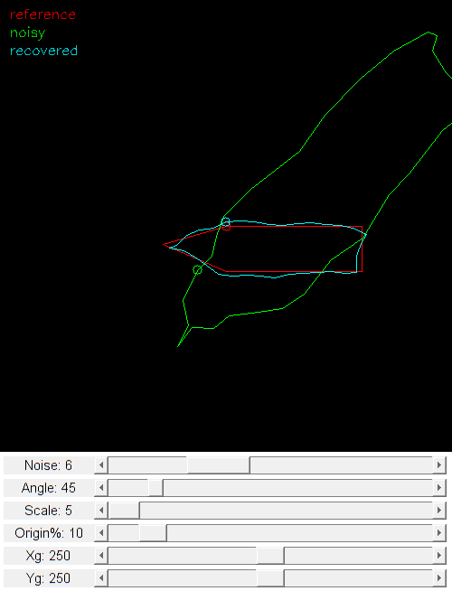

Fourier Descriptors Demo
Demostrates using Fourier descriptors for contour matching.
Sources
function varargout = fourier_descriptors_demo_gui() % create the UI h = buildGUI(); if nargout > 0, varargout{1} = h; end end function out = noisyPolygon(pts, noise) if noise == 0 out = pts; return; end try % we want reproducible random numbers rng('default') end pts = pts + (rand(size(pts)) * 2*noise - noise); out = pts(1,:); for i=1:size(pts,1) next = i + 1; if next > size(pts,1), next = 1; end u = pts(next,:) - pts(i,:); d = norm(u); a = atan2(u(2), u(1)); step = max(d/noise, 1); for j=1:step:d pAct = u * j/d; r = rand() * noise; theta = a + rand()*2*pi; pNew = r*[cos(theta), sin(theta)] + pAct + pts(i,:); out(end+1,:) = pNew; end end out = fix(out); end function img = FDCurveMatching(p) % reference shape with 5 vertices ctr0 = [250 250; 400 250; 400 300; 250 300; 180 270]; % noisy shape, transformed (rotate and scale) M = cv.getRotationMatrix2D([p.xg, p.yg], p.angle, 10/p.scale); ctr1 = noisyPolygon(ctr0, p.levelNoise); ctr1 = permute(cv.transform(permute(ctr1, [1 3 2]), M), [1 3 2]); % phase-shift (i.e same order just different starting point) n = size(ctr1,1); orig = fix(p.origin/100 * n); ctr1 = circshift(ctr1, orig, 1); % estimate transformation if true obj = cv.ContourFitting('FDSize',16, 'CtrSize',256); t = obj.estimateTransformation(ctr1, ctr0, 'FD',false); else % explicit contour sampling with 256 points ctr0s = cv.ContourFitting.contourSampling(ctr0, 256); ctr1s = cv.ContourFitting.contourSampling(ctr1, 256); obj = cv.ContourFitting('FDSize',16); t = obj.estimateTransformation(ctr1s, ctr0s, 'FD',false); end % fix t values to same range as ours: origin in (0,1)*n, angle in (0,360) if t(1) < 0, t(1) = 1 + t(1); end if t(2) < 0, t(2) = 2*pi + t(2); end fprintf('Transform: t=%s\n', mat2str(t,3)); fprintf(' Origin = %f, expected %d (%d)\n', t(1)*n, orig, n); fprintf(' Angle = %f, expected %d\n', t(2)*180/pi, p.angle); fprintf(' Scale = %f, expected %g\n', t(3), p.scale/10); % apply estimated transformation to bring noisy shape to reference shape ctr2 = cv.ContourFitting.transformFD(ctr1, t, 'FD',false); ctr2 = cat(1, ctr2{:}); % draw the three contours C = {ctr0, ctr1, ctr2}; clr = [255 0 0; 0 255 0; 0 255 255]; txt = {'reference', 'noisy', 'recovered'}; % output image size rect = [0 0 500 500]; if false for i=1:numel(C) rect = cv.Rect.union(rect, cv.boundingRect(C{i})); end end img = zeros([rect(3:4) 3], 'uint8'); for i=1:numel(C) % legend img = cv.putText(img, txt{i}, [10 20*i], ... 'Color',round(clr(i,:)*0.8), 'FontScale',0.5); % contour img = cv.drawContours(img, C{i}, 'Color',clr(i,:)); % starting point img = cv.circle(img, C{i}(1,:), 5, 'Color',clr(i,:)); end end function onChange(~,~,h) %ONCHANGE Event handler for UI controls % retrieve current values from UI controls p = struct(); p.levelNoise = round(get(h.slid(6), 'Value')); p.angle = round(get(h.slid(5), 'Value')); p.scale = round(get(h.slid(4), 'Value')); p.origin = round(get(h.slid(3), 'Value')); p.xg = round(get(h.slid(2), 'Value')); p.yg = round(get(h.slid(1), 'Value')); set(h.txt(1), 'String',sprintf('Yg: %d',p.yg)); set(h.txt(2), 'String',sprintf('Xg: %d',p.xg)); set(h.txt(3), 'String',sprintf('Origin%%: %d',p.origin)); set(h.txt(4), 'String',sprintf('Scale: %d',p.scale)); set(h.txt(5), 'String',sprintf('Angle: %d',p.angle)); set(h.txt(6), 'String',sprintf('Noise: %d',p.levelNoise)); % perform contour matching using Fourier descriptors img = FDCurveMatching(p); % show result set(h.img, 'CData',img); drawnow; end function h = buildGUI() %BUILDGUI Creates the UI % canvas img = zeros([500 500 3], 'uint8'); sz = size(img); % initial params % (a 45 degree rotation centered at [250,250] with a scaling of 5/10) p = struct(); p.levelNoise = 6; p.angle = 45; p.scale = 5; p.origin = 10; p.xg = 250; p.yg = 250; % build the user interface (no resizing to keep it simple) h = struct(); h.fig = figure('Name','FD Curve matching', ... 'NumberTitle','off', 'Menubar','none', 'Resize','off', ... 'Position',[200 200 sz(2) sz(1)+155-1]); if ~mexopencv.isOctave() %HACK: not implemented in Octave movegui(h.fig, 'center'); end h.ax = axes('Parent',h.fig, 'Units','pixels', 'Position',[1 155 sz(2) sz(1)]); if ~mexopencv.isOctave() h.img = imshow(img, 'Parent',h.ax); else %HACK: https://savannah.gnu.org/bugs/index.php?45473 axes(h.ax); h.img = imshow(img); end h.txt(1) = uicontrol('Parent',h.fig, 'Style','text', 'FontSize',11, ... 'Position',[5 5 100 20], 'String',sprintf('Yg: %d',p.yg)); h.txt(2) = uicontrol('Parent',h.fig, 'Style','text', 'FontSize',11, ... 'Position',[5 30 100 20], 'String',sprintf('Xg: %d',p.xg)); h.txt(3) = uicontrol('Parent',h.fig, 'Style','text', 'FontSize',11, ... 'Position',[5 55 100 20], 'String',sprintf('Origin%%: %d',p.origin)); h.txt(4) = uicontrol('Parent',h.fig, 'Style','text', 'FontSize',11, ... 'Position',[5 80 100 20], 'String',sprintf('Scale: %d',p.scale)); h.txt(5) = uicontrol('Parent',h.fig, 'Style','text', 'FontSize',11, ... 'Position',[5 105 100 20], 'String',sprintf('Angle: %d',p.angle)); h.txt(6) = uicontrol('Parent',h.fig, 'Style','text', 'FontSize',11, ... 'Position',[5 130 100 20], 'String',sprintf('Noise: %d',p.levelNoise)); h.slid(1) = uicontrol('Parent',h.fig, 'Style','slider', ... 'Value',p.yg, 'Min',150, 'Max',350, 'SliderStep',[2 20]./(350-150), ... 'Position',[105 5 sz(2)-105-5 20]); h.slid(2) = uicontrol('Parent',h.fig, 'Style','slider', ... 'Value',p.xg, 'Min',150, 'Max',350, 'SliderStep',[2 20]./(350-150), ... 'Position',[105 30 sz(2)-105-5 20]); h.slid(3) = uicontrol('Parent',h.fig, 'Style','slider', ... 'Value',p.origin, 'Min',0, 'Max',100, 'SliderStep',[1 10]./(100-0), ... 'Position',[105 55 sz(2)-105-5 20]); h.slid(4) = uicontrol('Parent',h.fig, 'Style','slider', ... 'Value',p.scale, 'Min',5, 'Max',50, 'SliderStep',[1 5]./(50-5), ... 'Position',[105 80 sz(2)-105-5 20]); h.slid(5) = uicontrol('Parent',h.fig, 'Style','slider', ... 'Value',p.angle, 'Min',0, 'Max',360, 'SliderStep',[2 20]./(360-0), ... 'Position',[105 105 sz(2)-105-5 20]); h.slid(6) = uicontrol('Parent',h.fig, 'Style','slider', ... 'Value',p.levelNoise, 'Min',0, 'Max',20, 'SliderStep',[1 5]./(20-0), ... 'Position',[105 130 sz(2)-105-5 20]); % hook event handlers, and trigger default start opts = {'Interruptible','off', 'BusyAction','cancel'}; set(h.slid, 'Callback',{@onChange,h}, opts{:}); onChange([],[],h); end
Transform: t=[0.0574 0.819 0.497 -55.6 60.9] Origin = 1.779683, expected 3 (31) Angle = 46.904017, expected 45 Scale = 0.497066, expected 0.5